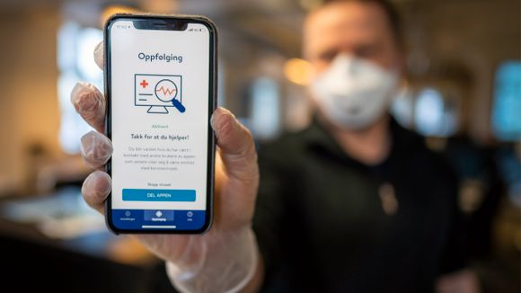

Som dere fleste sikkert har fått med dere, har FHI lansert den nye appen "Smittestopp" som sitt bidrag for å stoppe spredningen av COVID-19 viruset. Helt siden appen ble lansert har det vært hett i avisene, og spørsmål som "Burde man egentlig laste ned appen?" har blitt omdiskutert av mange ulike parter. Mange nordmenn har allerede lastet ned appen, mens resten er fremdeles skeptiske på om denne appen er like "ufarlig" som apputviklerne og myndighetene påstår. I denne teksten skal vi se på noen argumenter mot og for appen. Hvilken nytte kan appen ha? Og hvilke skadevirkninger kan den eventuelt ha?
Som sagt ble appen lansert for å stoppe spredningen av COVID-19 viruset. Dette vil naturligvis være det største argumentet for denne appen. Dersom flertallet laster ned appen og bruker den slik den skal brukes, vil spredningen av coronaviruset bli mindre og mindre. Desto flere som laster ned appen desto bedre oversikt får vi over virusspredningen og hvordan viruset oppfører seg i møte med folk, dette sier statsminister Erna Solberg. Dermed kan også myndighetene og FHI finne ut av hvordan helsearbeidere kan disponeres på best mulig måte. På den andre siden krever denne appen mye informasjon fra brukerne. Den krever både bluetooth og stedstjenester. Av den grunn mener EUs personvernsråd at appen opererer i strid med prinsippet om dataminimering.

En annen stor fordel med appen er at den vil hjelpe myndighetene med å få en oversikt over hvor folk beveger seg, og hvor mange som er sammen som en gruppe. På denne måten blir de lettere for myndighetene å besteme og planlegge når vi faktisk kan begynne å åpne ting igjen, noe jeg tipper de aller fleste i landet vårt ville ha satt stor pris på om kan skje snarest. Men det kan bli vanskelig for myndighetene å få den oversikt som kanskje trengs for å få best utbytte av appen når ikke flertallet laster den ned. Det er snakk om at appen sluker batteri. Apputviklerne har sagt at de har gjort alt av oppdateringer for å få hindret dette batteri-problemer, men kunder/appbrukere fortsetter å klage på at appen sluker batteriet. Dette er nemlig fordi appen konstant krever bluetooth og stedstjenester aktivert. Men batteri-problemet kan umulig være så stort.
Et annet viktig argument for appen er at dersom appen fungerer, og det viser seg at du har vært i kontakt med en koronasmittet person, kan du finne ut av dette med engang. Appen vil fortelle deg hvor og når du var i kontakt med den smittede. Du kan så kontakte lege, bli testet, og dersom du har blitt smittet så har vi ungått at du muligens har gått ut huset ditt i flere dager å smittet andre uten at du selv visste at du var smittet. Men som nevn tidligere krever appen mye data fra forbrukerne. Denne dataen tas opp og lagres av en stor og sårbar database som er akseptabel for innbrudd. GPS gjør det nemlig mulig å samle inn og kryptere data, og legge dette i et sentralt datalager som myndighetene har kontroll over. En ekspertgruppe har vurdert sikkerheten til appen. Gruppen leverte en foreløpig rapport 9. april til Helse- og omsorgsdepartementet (HOD). Rapporten avdekker svakheter og sårbarheter i appens kode, skriver Dagens Medisin. Likevel konkluderer den med at dataene blir samlet, sendt og lagret på en måte som gjør at risikoen for datainnbrudd er akseptabel for en app med så sensitive data. (Info hentet fra forskning.no). I tillegg til risikoen for datainnbrudd er også appen laget under et enormt tidspress, noe som betyr at apputviklerne kan ha gjort feil med appen, dette kan føre til at appen har såkalte "bugger" og "glitcher, noe som gjør dataen ekstra sårbar og sensitiv.
En annen ting apputviklerne og myndighetene påstår, er at denne appen er 100% anonym, men hvordan i alle dager kan de garantere det? La oss si at du ved en tilfeldig dag er ute å går, og du møter på en bekjent og stopper og snakker. Dersom det viser seg at den bekjente du møtte er smittet vil du få en varsel på telefonen om det. Og med dette så vil man jo huske hvem man har snakket med, og personen som er smittet vil ikke lengre være anonymisert. På denne måten kan ikke myndighetene påstå at appen er 100% anonym, og enda et argument kan brukes mot den nye appen.
Vi kan konkludere med at appen i selv er en meget god og solid idé, selv om den har en del ulemper. Appen vil på sikt stoppe spredningen av COVID-19 viruset dersom flertallet laster ned appen og bruker den slik den skal brukes. Appen vil også hjelpe myndighetene og FHI til å få en bedre oversikt om hvordan viruset oppfører seg i kontakt med folk, slik at de kan bestemme når ting kan begynne å åpne igjen, og finne ut av hvordan helsearbeidere skal disponeres på en best mulig måte. Nå til den negative siden. Appen krever konstant bluetooth og stedstjenester aktivert, noe som sluker batteriet og noe som gjør det lettere for folk å komme seg inn på telefonen din. Informajsonen som tas opp fra forbrukere lagres på en stor og sårbar database som er akseptabel for datainnbrudd, og det tidspresset appen ble laget under gjør faktumet om risikoen for datainnbrudd enda kraftigere. Appen i følge Eus personvernsråd strider mot prinsippet om dataminimering, og appen kan umulig være så anonym som både FHI og myndighetene påstår.